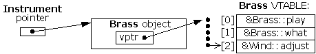

C++ 多态机制实现
compiler implement late binding mechanism
迟绑定是如何实现的(How C++ implements late binding)
关键字virtual告诉编译器不应该执行早期绑定，相反的，应该自动的安装所有必要的机制去执行迟绑定
The keyword virtual tells the compiler it should not perform early binding. Instead, it should automatically install all the mechanisms necessary to perform late binding.
为了实现迟绑定，典型的编译器为每个类类创建一个单一的表，这个表包涵了虚函数，即VTABLE
To accomplish this, the typical compiler[54] creates a single table (called the VTABLE) for each class that contains virtual functions.
编译器对特定的类放置虚函数的地址在虚函数表中
The compiler places the addresses of the virtual functions for that particular class in the VTABLE.
在每个带有虚函数的类中，隐藏着一个被称为虚函数的指针，(缩写为 VPTR ),该指针指向当前对象的虚函数表
In each class with virtual functions, it secretly places a pointer, called the vpointer (abbreviated as VPTR), which points to the VTABLE for that object.
当通过基类指针进行虚函数调用时，也称为 多态调用 ，编译器将会悄悄的插入代码去获取VPTR虚函数指针并且查找该函数在虚函数表中的地址，这样就可以调用正确的函数并且导致迟绑定的发生
When you make a virtual function call through a base-class pointer (that is, when you make a polymorphic call), the compiler quietly inserts code to fetch the VPTR and look up the function address in the VTABLE, thus calling the correct function and causing late binding to take place.
经过以上所有，对每个类设置虚函数表VTABLE，初始化虚函数指针VPTR,为虚函数调用插入代码都是自动发生的，所有不需要担心这些
All of this – setting up the VTABLE for each class, initializing the VPTR, inserting the code for the virtual function call – happens automatically, so you don’t have to worry about it.
即使编译器不知道对象的确切的类型，通过虚函数可以实现对象的正确函数调用
With virtual functions, the proper function gets called for an object, even if the compiler cannot know the specific type of the object.
存储类型信息(Storing type information)
如下是查看带有虚函数的类和不带虚函数的类的大小差别
here’s an example to examine the sizes of classes that use virtual functions compared with those that don’t:
//// Created by 王若璇 on 17/3/26.////: C15:Sizes.cpp// Object sizes with/without virtual functionsusing namespace std;class NoVirtual { int a; //如果注释掉int a则该类的对象大小为1public: void x() const {} int i() const { return 1; }};class OneVirtual { int a; int b; ///void* 指针为8字节，故为8字节对齐 总大小为16字节public: virtual void x() const {} int i() const { return 1; }};class TwoVirtuals { int a;public: virtual void x() const {} virtual int i() const { return 1; }};///sizeof 函数实际也是传参数，同样产生栈变量int main() { cout << "int: " << sizeof(int) << endl; cout << "NoVirtual: " << sizeof(NoVirtual) << endl; cout << "void* : " << sizeof(void*) << endl; cout << "OneVirtual: " << sizeof(OneVirtual) << endl; cout << "TwoVirtuals: " << sizeof(TwoVirtuals) << endl;} ///:~output
int: 4NoVirtual: 4void* : 8OneVirtual: 16TwoVirtuals: 16
没有虚函数的类，该类的大小等于一个int成员变量的大小。有一个虚函数的的类，该类的大小等于没有虚函数类的大小加一个void指针的大小.
With no virtual functions, the size of the object is exactly what you’d expect: the size of a single[55] int. With a single virtual function in OneVirtual, the size of the object is the size of NoVirtual plus the size of a void pointer.
以上结果证明了：如果一个类有一个或者多个虚函数，编译器就会插入一个指针，即VPTR。一个虚函数和两个虚函数之间没有区别，因为VPTR指针指向函数表。所有的虚函数地址可以被包含到一个函数表中。
It turns out that the compiler inserts a single pointer (the VPTR) into the structure if you have one or more virtual functions. There is no size difference between OneVirtual and TwoVirtuals. That’s because the VPTR points to a table of function addresses. You need only one table because all the virtual function addresses are contained in that single table.
这个例子要求至少一个成员数据变量，如果没有数据成员，c++编译器将会强制的使得对象为一个非0大小，因为每一个对象都必须有一个独立的地址
This example required at least one data member. If there had been no data members, the C++ compiler would have forced the objects to be a nonzero size because each object must have a distinct address.
##图形化显示虚函数表(Picturing virtual function)
为了确切的理解当我们使用虚函数时，背后的机制。使用图形化的方法有助于可视化虚函数幕布后面的活动
To understand exactly what’s going on when you use a virtual function, it’s helpful to visualize the activities going on behind the curtain.
以上一篇C++ 多态介绍中，最后的包含指向基类指针的数组为例：

每次创建一个包含了虚函数的类，或者从包含虚函数的类派生出一个新的类时，编译器会创建一个独一无二的该类的VTABLE虚函数表，如上图右边所示。
Each time you create a class that contains virtual functions, or you derive from a class that contains virtual functions, the compiler creates a unique VTABLE for that class, seen on the right of the diagram.
在虚函数表中放置着所有被声明为虚函数的地址，无论该虚函数是被声明在该类中，或者被声明在基类中。如果派生类没有重写被定义在基类中的虚函数，编译器将会在派生类的虚函数表中使用该函数的基类地址。例如在Brass类中的ajust()方法。
In that table it places the addresses of all the functions that are declared virtual in this class or in the base class. If you don’t override a function that was declared virtual in the base class, the compiler uses the address of the base-class version in the derived class. (You can see this in the adjust entry in the Brass VTABLE.)
当使用单一继承时，每一个对象都只含有一个VPTR。虚表指针必须初始化为指向合适虚函数表的首地址.(这件事情发生在构造函数中)
There is only one VPTR for each object when using simple inheritance like this. The VPTR must be initialized to point to the starting address of the appropriate VTABLE. (This happens in the constructor, which you’ll see later in more detail.)
一旦虚函数指针被初始化指向正确的虚函数表，对象就会知道它的类型是什么。但是这种自知是没有价值的，除非在虚函数调用的情况下。
Once the VPTR is initialized to the proper VTABLE, the object in effect “knows” what type it is. But this self-knowledge is worthless unless it is used at the point a virtual function is called.
当通过一个基类地址调用虚函数时（这种情况下，编译器没有所有必要的信息去执行早期绑定），一些特别的事情发生了。与通过特定的地址进行简单的汇编调用这种典型的函数调用不同，编译器会执行不同的代码去实现函数调用，下图是一个Brass对象通过基类指针调用adjust()的过程图（同样引用类型也会得到同样的结果）：
When you call a virtual function through a base class address (the situation when the compiler doesn’t have all the information necessary to perform early binding), something special happens. Instead of performing a typical function call, which is simply an assembly-language CALL to a particular address, the compiler generates different code to perform the function call. Here’s what a call to adjust( ) for a Brass object looks like, if made through an Instrument pointer (An Instrument reference produces the same result):

通过基类指针找到派生类对象，再有派生类对象中的vptr找到对应的VTABLE再在VTABLE遍历找到合适的方法即adjust()
因为获得VPTR虚表指针和决定实际函数地址出现在运行时期，所以这就得到了想要的迟绑定。对对象发送信息，对象会弄明白怎样处理它。
Because the fetching of the VPTR and the determination of the actual function address occur at runtime, you get the desired late binding. You send a message to the object, and the object figures out what to do with it.
##内部机制(Under the hood) 看虚函数调用生成的汇编代码是有帮助的，因此就会发现迟绑定确实是在发生。如下是adjust()虚函数调用的例子，代码参考上一篇《C++ 多态介绍》
It can be helpful to see the assembly-language code generated by a virtual function call, so you can see that late-binding is indeed taking place. Here’s the output from one compiler for the call
i.adjust(1);
inside the function f(Instrument& i):
push 1push simov bx, word ptr [si]call word ptr [bx+4]add sp, 4c++函数调用的参数和c一样，参数都是从右至左进栈（这个顺序是为了支持c语言变量列表）,所以参数1第一个进栈。在这个函数中si包含了当前对象的地址，它也会进栈因为它是该对象利益的首地址
The arguments of a C++ function call, like a C function call, are pushed on the stack from right to left (this order is required to support C’s variable argument lists), so the argument 1 is pushed on the stack first.At this point in the function, the register si (part of the Intel X86 processor architecture) contains the address of i. This is also pushed on the stack because it is the starting address of the object of interest.
注意上述首地址与this的值有关，this指针在每次成员函数调用之前都会默默的作为参数进栈。因此成员函数就会知道哪个特定的对象正在执行操作。这也是为什么会看到在成员函数调用之前会有多于一个数量的参数进栈的原因。（除了静态成员函数不涉及这些问题）
Remember that the starting address corresponds to the value of this, and this is quietly pushed on the stack as an argument before every member function call, so the member function knows which particular object it is working on. So you’ll always see one more than the number of arguments pushed on the stack before a member function call (except for static member functions, which have no this).
现在实际的虚拟函数调用必须被执行。首先，VPTR必须被生产出来，因此VTABLE可以被找到。为此VPTR 被插入到对象的开始的位置，因此this指针的内容与VPTR有关
Now the actual virtual function call must be performed. First, the VPTR must be produced, so the VTABLE can be found. For this compiler the VPTR is inserted at the beginning of the object, so the contents of this correspond to the VPTR. The line:
mov bx, word ptr [si]
获得字类型的指针si,即VPTR，存放在bx寄存器中。
fetches the word that si (that is, this) points to, which is the VPTR. It places the VPTR into the register bx.
在bx寄存器中的VPTR指向VTABLE中的首地址，但是函数的指针并不是VTABLE地址为0的地方，而是偏移地址为2的地方（因为这是上述列表中第三个地址）,对于这种内存模型，每一个函数指针为两个字节，所以编译器会给VPTR＋4来得到正确的函数调用地址
The VPTR contained in bx points to the starting address of the VTABLE, but the function pointer to call isn’t at location zero of the VTABLE, but instead at location two (because it’s the third function in the list). For this memory model each function pointer is two bytes long, so the compiler adds four to the VPTR to calculate where the address of the proper function is.
call word ptr [bx+4]
执行了上述指令之后，完成了虚函数的调用。最后，栈指针将会移动去清理之前函数调用被push进入的参数。在c和c++的汇编代码中，可以经常看到来访者清理参数，但是这项机制可能因为不同的编译器和不同的处理器上面实现有所不同。
Finally, the stack pointer is moved back up to clean off the arguments that were pushed before the call. In C and C++ assembly code you’ll often see the caller clean off the arguments but this may vary depending on processors and compiler implementations.
处理对象的方式在不同的情况下不同(Object are different)
(most compilers will perform early binding when they are making a call to a virtual function for an object because they know the exact type. Here’s an example:) 当对象调用虚函数时，大多数编译器将会执行早期绑定，因为他们知道确切的类型。
//: C15:Early.cpp// Early binding & virtual functionsusing namespace std;class Pet {public: virtual string speak() const { return ""; }};class Dog : public Pet {public: string speak() const { return "Bark!"; }};int main() { Dog ralph; Pet* p1 = &ralph; Pet& p2 = ralph; Pet p3; // Late binding for both: cout << "p1->speak() = " << p1->speak() <<endl; cout << "p2.speak() = " << p2.speak() << endl; // Early binding (probably): cout << "p3.speak() = " << p3.speak() << endl;} ///:~最后一项输出可能是早期绑定，然而，如果编译器不想这样工作的太困难，它仍然可以使用迟绑定得到同样的结果。
However, if the compiler doesn’t want to work so hard, it can still use late binding and the same behavior will occur.
虚析构函数
c++ 基类采用virtual虚析构函数是为了防止内存泄露。当delete 使用基类指针指向派生类的对象时，如果没有使用virtual虚析构函数，则会导致派生类的部分内存没有被释放，只释放了基类的内存。动态绑定机制使得派生类的对象可以正确的释放。
总结(Why virtual functions)
多态有很多好处，易于扩展等等。但是有时候要注重程序运行的效率，这时候就需要在代码中寻找哪些地方不需要使用多态，使用non-virtual，非虚函数是加速程序更好的选择。
Thus, the virtual keyword is provided for efficiency tuning. When designing your classes, however, you shouldn’t be worrying about efficiency tuning. If you’re going to use polymorphism, use virtual functions everywhere. You only need to look for functions that can be made non-virtual when searching for ways to speed up your code (and there are usually much bigger gains to be had in other areas – a good profiler will do a better job of finding bottlenecks than you will by making guesses).